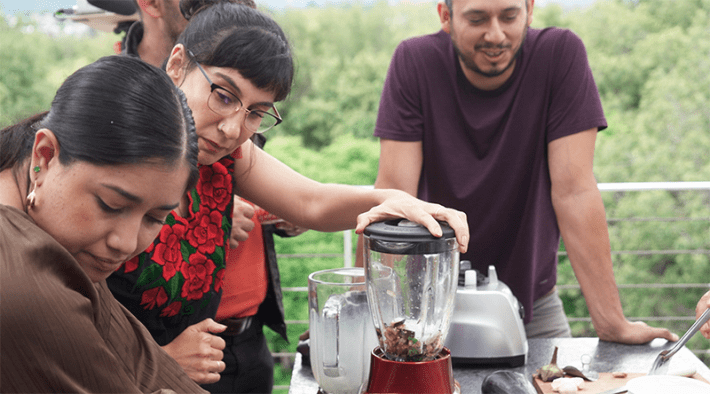

In the Mexican city of Puebla, every family has a recipe for tinga. There might be disagreements about whether the stew should be made with chicken or beef, and some might quibble about the chipotle peppers, which can be smoked or sweet. But every poblano knows to serve tinga with corn tortillas. Last November, I was offered something different. The tortillas were made with teff flour from Ethiopia.
At the same meal, I also ate tamales, another Mexican staple, conventionally filled with corn masa. The dough I tasted had a similar texture, but not quite the same flavor, because it was made with Ethiopian chickpeas.
I admit that I was not an innocent bystander. In fact, I was an instigator of this culinary experiment, one of dozens I’ve co-organized worldwide. Tasting Tomorrow (as we’ve dubbed it) is an attempt to figure out how heritage cuisine might withstand the impact of climate change, and how peoples from Mexico to Spain to India might cope with the stresses and strains on traditions that literally and figuratively sustain them.
Is it the flavor? The texture? The way it’s served at a family gathering?
Nearly a decade ago, I started exploring the kinds of infrastructure that hold communities together. At the time, concern about extreme weather was mostly directed toward bridges and tunnels. Although these will certainly be imperiled in the future—and some have already crumbled—my focus has been on cultural infrastructure, the customs and rituals that help people live meaningful lives and relate to each other. I’ve come to believe that these qualities will ultimately matter more than feats of engineering, because they’re the foundations of cooperation. And none of these customs are more universal—or more primal—than food.
Heritage cuisines are highly vulnerable to global warming because their core ingredients are adapted to historical weather conditions. Maize is indigenous to Mexico. The corn in tamales and tortillas was first consumed because it was readily available. As the climate changes, those staples are unlikely to grow where they have in the past, at least without technological interventions that could redouble troubles, such as diverting rivers for irrigation. Shipping customary crops from afar exacts another environmental cost, equally steep, since transportation requires energy, typically in the form of fossil fuels. In other words, the global challenges of food and water insecurity are especially profound in terms of familiar foods and the sense of security they provide.
At the University of Maryland and North Carolina State University, my colleagues Matt Fitzpatrick and Rob Dunn have developed a method known as climate analogue modeling to forecast changes to natural ecosystems. Their models use the United Nations’ IPCC data to predict future climates based on geography. Based on predictions of the weather in many locations 70 years in the future, they’ve identified locations today with equivalent weather conditions. The information is useful for conservation efforts—and future foodways.

MEXICAN FOOD REMIX:On the Mexico City campus of the Tecnológico de Monterrey, faculty experiment with alternative versions of traditional Mexican dishes using ingredients from Yemen, such as eggplant and bulgur. Yemen is a climate analogue for Mexico City. Photo by Isra Bistrain.
To see the future of San Francisco, look to Tangiers, Morocco. Saudi Arabia provides a good approximation of the Iberian Peninsula of Spain in seven decades. Nagaland, in the far northeast of India on the border of Myanmar, is anticipated to have the climate of the Khyber Pakhtunkhwa province of Pakistan, close to the border of Afghanistan. And Ethiopia is a reasonable proxy for Puebla. Seasonal temperatures and rainfall are both salient factors. San Francisco is expected to be more than 6 degrees Fahrenheit warmer and 13 percent wetter in winter. Puebla is expected to be nearly 8 degrees Fahrenheit warmer and 4 percent drier in summer.
These predictions necessarily make myriad assumptions about political decisions. Indeed, the forecasts might motivate policy changes if presented in ways that people can experience in the present—notably, in the food they eat. Tasting Tomorrow is motivated by mitigation as much as adaptation. Substituting ingredients from climate analogue locations, we’re trying to figure out how to maintain culinary traditions in the future. But we also want people to let people taste the differences for themselves, something that cannot be done with raw data.
In Puebla last November, nearly 30 locals gathered at the Museo Urbano Interactivo to argue about what makes a dish like tinga uniquely poblano. Is it the flavor? The texture? The way it’s served at a family gathering? Based on these criteria, they cooked new versions of tinga incorporating ingredients we imported from Ethiopia, seeking to retain the qualities they most valued. They also made Ethiopian versions of tamales, cemitas, and mole de pollo, all of which were served at a community gathering. For a city as traditional as Puebla, the response was astonishingly positive. We didn’t get run out of town. The manager of a local restaurant quietly took note of the recipes.
Unfortunately for the future of the planet, the cheese was delicious.
Collaborating with local people is the crux of Tasting Tomorrow. Their tastes and traditions guide every decision. In Nagaland, for instance, Indigenous cooks tried replacing wild rice with millet from Pakistan. (Responses were mixed. “Perfectly soothing,” said one. “I didn’t enjoy it,” another retorted.)
We’ve also worked with award-winning restaurants. During the Dubai Future Forum a couple years ago, we partnered with a chef from the Iberian Peninsula on a version of Manchego cheese, substituting the usual sheep’s milk with camel’s milk from the Gulf. At a ticketed dinner, elite guests digested a future that is highly probable unless people in their position take action. (Unfortunately for the future of the planet, the cheese was delicious.)
The simultaneous need for mitigation and adaptation presents a paradox, since success of the latter diminishes the urgency of the former. Although Tasting Tomorrow does not resolve this paradoxical situation, I have witnessed the impact of putting unfamiliar ingredients in people’s hands, and encouraging them to try foods that are just noticeably different. The effect is to activate their sense of agency. A small choice, such as the decision to stuff a tamale with chickpeas instead of maize, initiates a cascade of larger considerations. Participants recognize that they have options, and experience the power of creativity to make the most of a bad situation.
Recently in San Francisco, the city I call home, I’ve begun to take the opposite approach, seeking to meet the paradox from the other end. I’ve started to distribute packets containing seeds to grow tangerine plants, a staple crop in Tangiers, one of San Francisco’s climate analogues. Each packet is printed with instructions directing the recipient to retain the seeds as a form of insurance for future generations, in case climate change continues unabated. The envelope in which they’re sealed is presented as a challenge to everyone living in the present: What actions are people willing to take to alter the planetary climate trajectory, ensuring that the packet will never need to be opened?
I still have a hankering for those teff tamales, but the seed packets feed a different part of the imagination. As important as it may be to collectively cook up palatable futures, it’s also essential that we communally hunger for a tomorrow that tastes like today. 
Lead image: Barak Shrama